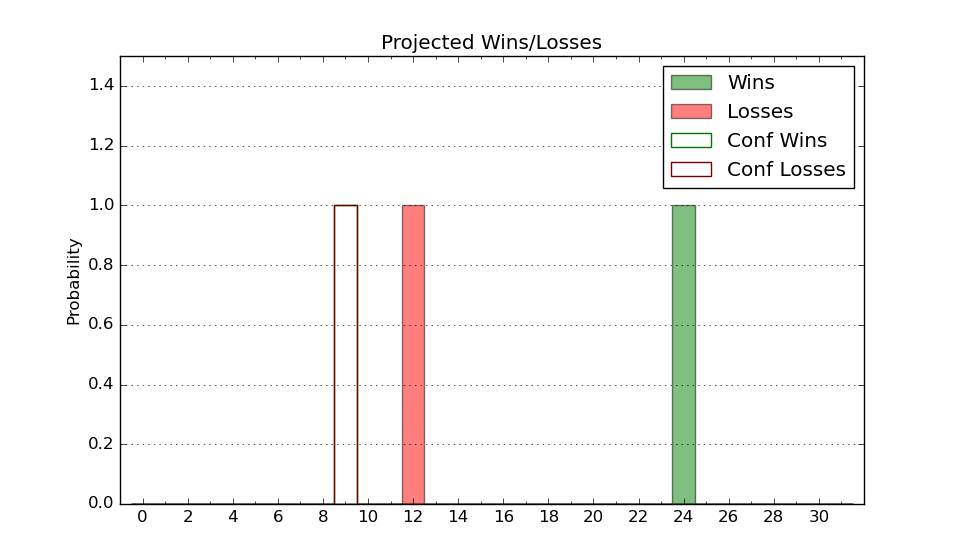

| Home | Game Probabilities | Conferences | Preseason Predictions | Odds Charts | NCAA Tournament |
| City: | College Station, Texas | |
| Conference: | SEC (5th)
| |
| Record: | 9-9 (Conf) 24-12 (Overall) | |
| Ratings: | Comp.: 14.7 (52nd) Net: 14.7 (52nd) Off: 107.5 (78th) Def: 92.8 (41st) SoR: 66.1 (45th) |
| Remaining | ||||||
|---|---|---|---|---|---|---|
| Date | Opponent | Win Prob | Pred. | |||
| 3/23 | Wake Forest (34) | 60.1% | W 73-70 | |||
| Previous | Game Score | |||||
| Date | Opponent | Win Prob | Result | Off | Def | Net |
| 11/10 | North Florida (244) | 94.0% | W 64-46 | -27.2 | 17.8 | -9.4 |
| 11/12 | Abilene Christian (128) | 84.3% | W 81-80 | -4.2 | -8.8 | -13.0 |
| 11/14 | Tex A&M Corpus Chris (241) | 93.8% | W 86-65 | 21.6 | -11.8 | 9.8 |
| 11/17 | Houston Baptist (330) | 97.7% | W 73-39 | -16.6 | 27.4 | 10.8 |
| 11/22 | (N) Wisconsin (32) | 43.5% | L 58-69 | -9.5 | -1.1 | -10.6 |
| 11/23 | (N) Butler (129) | 74.6% | W 57-50 | -11.4 | 14.6 | 3.1 |
| 11/24 | (N) Notre Dame (41) | 46.5% | W 73-67 | -3.1 | 10.7 | 7.6 |
| 11/30 | New Orleans (267) | 94.9% | W 85-65 | 3.7 | -5.2 | -1.5 |
| 12/11 | (N) TCU (33) | 44.8% | L 64-68 | -5.6 | -2.9 | -8.5 |
| 12/18 | @Oregon St. (236) | 80.6% | W 83-73 | 9.3 | -6.8 | 2.5 |
| 12/21 | Northwestern St. (324) | 97.5% | W 80-61 | -15.4 | 1.5 | -13.9 |
| 12/29 | Central Arkansas (314) | 97.1% | W 85-59 | 5.2 | -0.9 | 4.3 |
| 1/4 | @Georgia (214) | 76.8% | W 81-79 | 9.2 | -16.8 | -7.6 |
| 1/8 | Arkansas (24) | 54.1% | W 86-81 | 13.9 | -5.5 | 8.3 |
| 1/11 | Mississippi (103) | 79.7% | W 67-51 | 1.1 | 11.6 | 12.8 |
| 1/15 | @Missouri (144) | 65.4% | W 67-64 | -15.3 | 6.9 | -8.5 |
| 1/19 | Kentucky (8) | 33.2% | L 58-64 | -17.2 | 19.1 | 1.9 |
| 1/22 | @Arkansas (24) | 25.7% | L 73-76 | -3.5 | 9.7 | 6.1 |
| 1/26 | @LSU (20) | 23.0% | L 64-70 | 7.1 | -4.5 | 2.6 |
| 1/29 | South Carolina (101) | 79.4% | L 63-74 | -11.9 | -21.3 | -33.2 |
| 2/1 | @Tennessee (9) | 13.5% | L 80-90 | 19.9 | -19.9 | -0.0 |
| 2/5 | Missouri (144) | 86.6% | L 66-70 | 8.5 | -33.6 | -25.2 |
| 2/8 | LSU (20) | 50.4% | L 68-76 | 1.2 | -8.7 | -7.6 |
| 2/12 | @Auburn (14) | 17.4% | L 58-75 | -15.7 | 5.7 | -10.0 |
| 2/15 | Florida (50) | 64.3% | W 56-55 | -12.3 | 8.6 | -3.7 |
| 2/19 | @Vanderbilt (59) | 37.1% | L 67-72 | -8.5 | 5.7 | -2.8 |
| 2/22 | Georgia (214) | 91.9% | W 91-77 | 8.8 | -22.1 | -13.4 |
| 2/26 | @Mississippi (103) | 53.6% | W 76-66 | 21.7 | -3.1 | 18.7 |
| 3/2 | @Alabama (31) | 29.4% | W 87-71 | 18.5 | 12.1 | 30.6 |
| 3/5 | Mississippi St. (51) | 64.5% | W 67-64 | -1.3 | 0.0 | -1.3 |
| 3/10 | (N) Florida (50) | 49.4% | W 83-80 | 13.0 | 1.2 | 14.2 |
| 3/11 | (N) Auburn (14) | 27.9% | W 67-62 | 0.8 | 17.3 | 18.1 |
| 3/12 | (N) Arkansas (24) | 39.0% | W 82-64 | 14.0 | 11.4 | 25.5 |
| 3/13 | (N) Tennessee (9) | 22.3% | L 50-65 | -9.3 | 1.0 | -8.2 |
| 3/15 | Alcorn St. (259) | 94.7% | W 74-62 | 0.3 | -2.3 | -2.1 |
| 3/19 | Oregon (75) | 71.4% | W 75-60 | 14.5 | -3.1 | 11.4 |
| Stats & Trends | |||||
|---|---|---|---|---|---|
| Current | Day | Week | Month | Season | |
| Composite | 14.7 | +0.2 | +0.1 | +2.5 | +10.2 |
| Comp Rank | 52 | +1 | +2 | +21 | +104 |
| Net Efficiency | 14.7 | +0.2 | +0.1 | +2.5 | -- |
| Net Rank | 52 | +1 | +2 | +20 | -- |
| Off Efficiency | 107.5 | +0.4 | +0.2 | +0.2 | -- |
| Off Rank | 78 | +5 | +3 | +20 | -- |
| Def Efficiency | 92.8 | -0.2 | -0.1 | +2.2 | -- |
| Def Rank | 41 | -4 | -4 | +15 | -- |
| SoS Rank | 70 | -1 | -4 | +10 | -- |
| Exp. Wins | 24.0 | +1.0 | +2.0 | +6.5 | +10.8 |
| Exp. Conf Wins | 9.0 | -- | -- | +1.5 | +3.8 |
| Conf Champ Prob | 0.0 | -- | -- | -- | -0.1 |

| Advanced Stats | ||
|---|---|---|
| Stat | Value | Rank |
| Off Eff FG % | 0.514 | 128 |
| Off Ast Ratio | 0.151 | 120 |
| Off ORB% | 0.340 | 20 |
| Off TO Rate | 0.145 | 83 |
| Off FT Ratio | 0.353 | 53 |
| Def Eff FG % | 0.467 | 69 |
| Def Ast Ratio | 0.152 | 257 |
| Def ORB% | 0.281 | 247 |
| Def TO Rate | 0.212 | 6 |
| Def FT Ratio | 0.312 | 213 |